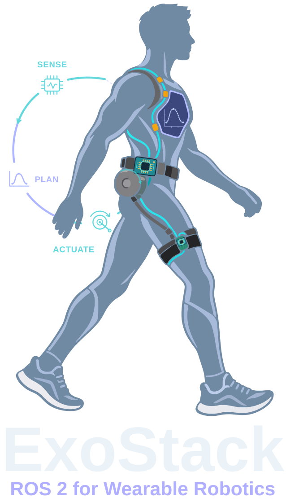
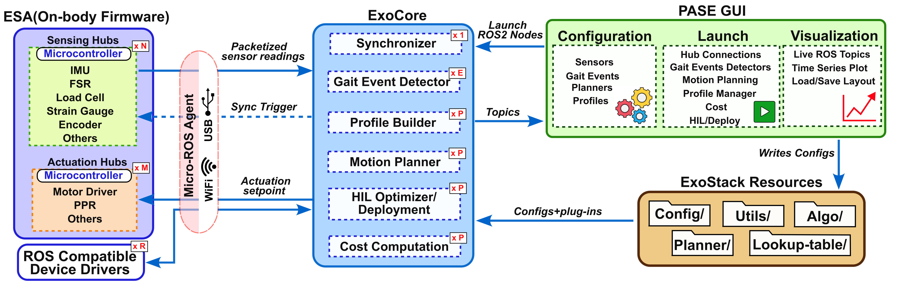

Created by: Debadrata Sarkar, Soumen Sen, Aman Arora

ExoStack takes an exosuit or exoskeleton from body-worn sensors to personalized assistance: declarative ESP32 hubs, configuration-driven ROS 2 nodes, human-in-the-loop optimization and a GUI, in one framework.
Each part is installed where it runs (on the boards worn on the body or on the host computer), and they meet on one ROS 2 graph.
Arduino library that turns an ESP32 into a micro-ROS sensing or actuation hub, declared by a device list.
Learn more →Generic nodes for synchronization, gait events, profiles, motion planning, cost and HIL optimization.
Learn more →YAML configuration, algorithm plug-ins and lookup tables, everything you edit.
Learn more →Configure the stack, launch every stage and plot any signal live.
Learn more →Six stages, from the boards worn on the body to the optimizer on the host.
ESP32 hubs publish every channel of a board as one message on /hub_*.
Hubs share a time base; matched readings appear on /synced_sensors.
Gait-event plug-ins fire on named channels with a confidence window.
Lookup tables or an optimizer give parameters; builders and planners turn them into set-points.
Float32 set-points drive the actuation hubs or any ROS 2 driver.
Per-cycle costs steer CMA-ES or Bayesian optimization in the HIL loop.

A board is a device list and five calls. ESA reads analog, digital and I²C devices, filters them, and publishes every channel as one message on a common time base.
#include "ESA.h" SoftExoWalk exo; DeviceConfig deviceList[] = { { I2C, 0x4A, "IMU_T", MAIN, 9 }, // 9-channel IMU { I2C, 0x2A, "LC_F", MAIN }, // load cell { AI, 34, "FSR", MEDIAN, 3 }, // filtered analog input }; const size_t deviceList_len = sizeof(deviceList) / sizeof(deviceList[0]); void setup() { exo.setupCommunication("usb"); // or Wi-Fi if (exo.initializeSystem()) { exo.setupNode("hub_right_node"); exo.setupPublisher("/hub_right", 100); exo.bootSystem(); } } void loop() { exo.readSensorsData(); exo.publish(true); }
Every ExoCore node is created from one YAML entry. Detectors, profile builders, lookup algorithms, planners, cost functions and optimizers are Python plug-ins loaded by name, and PASE lists them automatically.
[hub, channel]# gait_events.yaml: one detector node per entry events: right_heel_strike: sensors: [[hubr, fsr]] algorithm: "HeelStrike" # plug-in, loaded by name parameters: [2.0, 0.2] output_topic: "/heel_strike_right" # mplanner.yaml: one planner node per entry planners: right_hip_extension: gait_event_topic: "/right_hip_extension_start" planner_algorithm: "LinearInterpolatedList" output_topic: "/right/hip_ppr_cmd"
Deployment and human-in-the-loop optimization share the same builders and planners. A candidate number travels through every HIL message, so each measured cost is credited to the parameters that produced it.

Both systems run the same ESA library and ExoCore nodes; only their configuration and plug-ins differ.
Bilateral soft exosuit with sensorized pneumatic muscles; assistance personalized by Bayesian optimization.
Pneumatic muscles in a backpack drive flexion and extension through tendons; extension assistance tuned by CMA-ES.
One clone, four installs. The repository ships a complete bilateral configuration to start from.
# get the code cd ~/ros2_ws/src git clone https://github.com/debadrata/ExoStack.git && cd ExoStack # ESA firmware library and its vendor libraries cp -r ESA/ESA ~/Arduino/libraries/ cp -r ESA/PREREQUISITE_LIBRARIES_COPY_TO_ARDUINO_LIBRARIES/* \ ~/Arduino/libraries/ # ExoCore and its workspace pip3 install -r exo_stack/requirements.txt cp -r exo_stack_resources ~/ (cd ~/ros2_ws && colcon build --packages-select exo_stack) # PASE GUI cd PASE_GUI && pip3 install -r requirements.txt && python3 main.py
Requirements and the install of ESA, the micro-ROS agent, ExoCore and PASE.
Open →ESA sketches, the four YAML files and lookup tables, by hand or in PASE.
Open →The seven stages, in order, from the GUI or the terminal.
Open →Configuration, launch and live visualization of any signal.
Open →Add I²C sensors and actuators from templates.
Open →Detectors, builders, lookup algorithms, optimizers, costs and planners.
Open →ExoStack: A Modular and Reconfigurable Software Framework for Wearable Robotics Using ROS 2
@article{exostack2026,
title = {ExoStack: A Modular and Reconfigurable Software Framework for Wearable Robotics Using ROS 2},
author = {Sarkar, Debadrata and others},
journal = {arXiv preprint arXiv:2611.12306},
year = {2026},
doi = {10.48550/arXiv.2611.12306}
}Human Centred Robotics and Cybernetics Group, CSIR–Central Mechanical Engineering Research Institute (CSIR-CMERI), Durgapur, India
Questions, collaborations and bug reports are welcome, by email or through GitHub Issues.